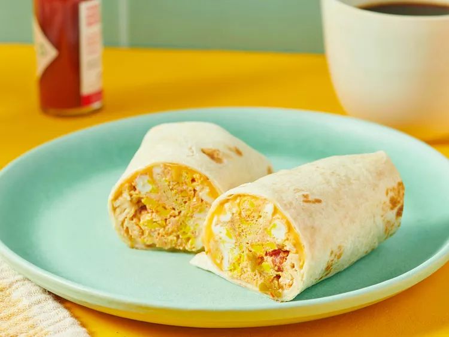
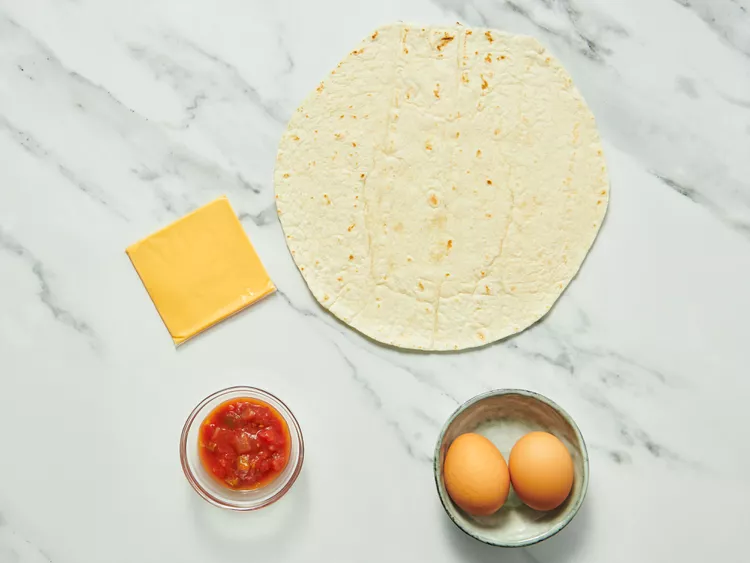
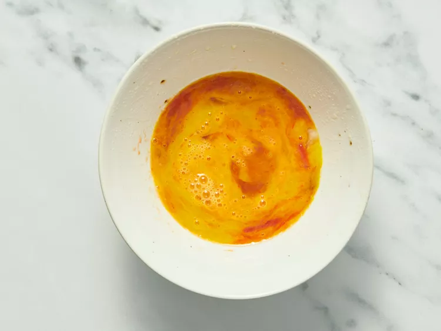
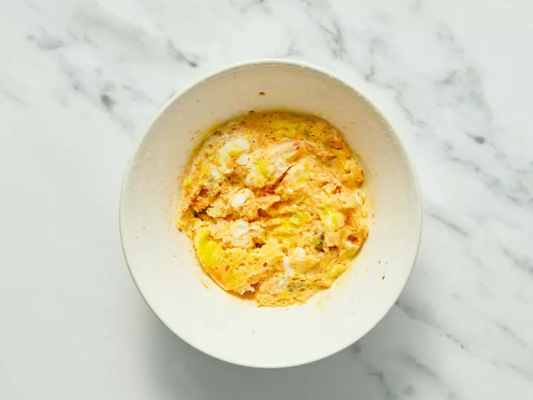
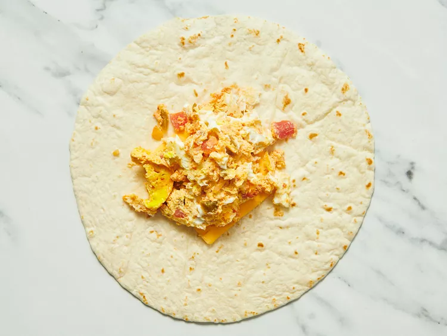
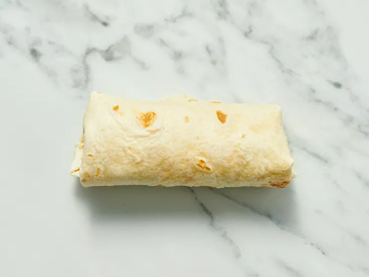

A fast DIY breakfast for the road that's made in minutes with scrambled egg, salsa, and cheese wrapped up in a tortilla.
Gather all ingredients.
Spray a cereal bowl with nonstick cooking spray. Crack the eggs into the bowl, add the salsa, and stir.
Microwave on high for 1 minute, stir, and cook for another minute or until the mixture firms up.
Place cheese in center of tortilla and top with egg mixture.
Wrap it all up like a burrito and head for the car!
